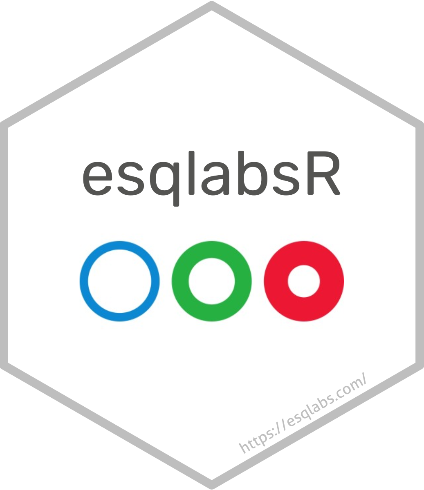

Load simulated scenarios from csv and pkml.
Source:R/utilities-scenarios.R
loadScenarioResults.RdLoad simulated scenarios from csv and pkml.
Arguments
- scenarioNames
Names of simulated scenarios
- resultsFolder
Path to the folder where simulation results as scv and the corresponding simulations as pkml are located.
Value
A named list, where the names are scenario names, and the values are
lists with the entries simulation being the initialized Simulation object with applied parameters,
results being SimulatioResults object produced by running the simulation,
and outputValues the output values of the SimulationResults.
Details
This function requires simulation results AND the corresponding
simulation files being located in the same folder (resultsFolder) and have
the names of the scenarios.
Examples
if (FALSE) {
# First simulate scenarios and save the results
projectConfiguration <- esqlabsR::createDefaultProjectConfiguration()
scenarioConfigurations <- readScenarioConfigurationFromExcel(
projectConfiguration = projectConfiguration
)
scenarios <- createScenarios(scenarioConfigurations = scenarioConfigurations)
simulatedScenariosResults <- runScenarios(
scenarios = scenarios
)
saveResults(simulatedScenariosResults, projectConfiguration)
# Now load the results
scnarioNames <- names(scenarios)
simulatedScenariosResults <- loadScenarioResults(
scnarioNames = scnarioNames,
resultsFolder = pathToTheFolder
)
}